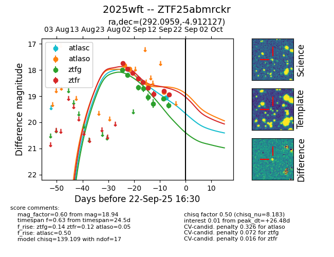
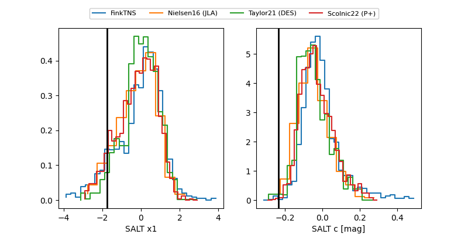

FINK: ZTF25abmrckr
Lasair: ZTF25abmrckr
ALeRCE: ZTF25abmrckr
TNS: 2025wft
YSE: 2025wft
ZTF25abmrckr (ztf,fink)
2025wft (tns,yse)
equatorial (ra, dec) = (292.0959,-4.91213)
galactic (l, b) = (32.7404,-10.44964)


last atlasc=19.06, atlaso=18.84, ztfg=19.35, ztfr=18.94
1 atlasc, 4 atlaso, 8 ztfg, 9 ztfr detections